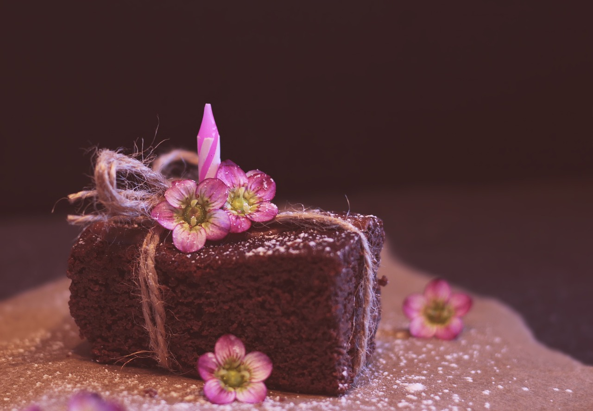
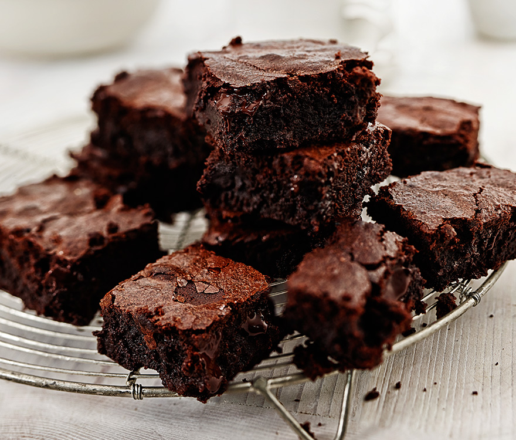

Brownie de chocolate
Ingredientes:
- -Chocolate (puede ser chocolate negro o semidulce)
- -Mantequilla
- -Azúcar
- -Huevos
- -Harina de trigo
- -cacao en polvo
- -Esencia de vainilla (opcional)
- -Nueces o chispas de chocolate (opcional)
Modo de preparación resumido:
- -Derretir chocolate y mantequilla juntos.
- -Batir huevos y azúcar hasta obtener una mezcla cremosa.
- -Incorporar el chocolate derretido y la esencia de vainilla.
- -Agregar harina y cacao en polvo tamizados, mezclar bien.
- -Opcional: añadir nueces o chispas de chocolate.
- -Verter la mezcla en un molde y hornear hasta que un palillo salga con migas húmedas.
-